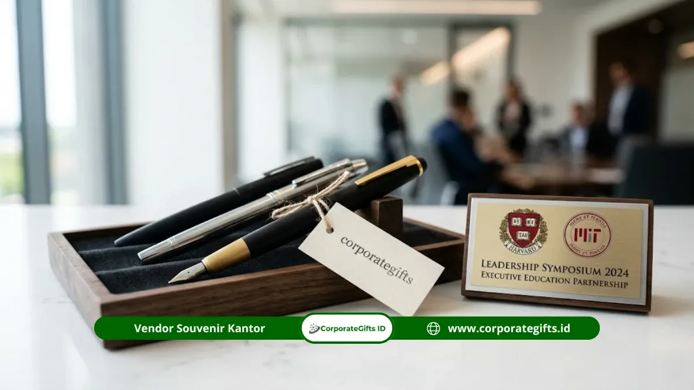

Corporate Gifts ID - Memilih vendor souvenir mitra sekolah negeri yang tepat berarti mencari mitra penyedia yang mampu memenuhi standar mutu produk, ketepatan jadwal produksi, fleksibilitas kustomisasi desain, dan kelengkapan dokumen administrasi formal. Dalam pengadaan yang melibatkan institusi pemerintah dan lembaga pendidikan, cinderamata bukan sekadar bingkisan seremonial, melainkan representasi marwah kelembagaan serta komitmen kemitraan jangka panjang.
Poin Kunci Seleksi Vendor Souvenir Sekolah Negeri:
- Legalitas Usaha & Faktur Pajak: Vendor wajib berstatus Pengusaha Kena Pajak (PKP) resmi dan memiliki NPWP aktif untuk kelancaran pertanggungjawaban anggaran instansi.
- Uji Sampel Fisik (Proofing): Mintalah mock-up digital dan sampel fisik sebelum pesanan massal berjalan guna memastikan akurasi logo dual-branding.
- Struktur Biaya Transparan: Hindari penawaran lump sum tanpa rincian biaya cetak, kemasan khusus, dan ongkos kirim ke lokasi tujuan.
Kerja sama antara instansi pemerintah, perusahaan sponsor, universitas, maupun lembaga swadaya masyarakat dengan sekolah negeri sering kali memerlukan cinderamata apresiasi. Untuk menghindari risiko pengadaan, penting bagi tim pengadaan (procurement) melakukan evaluasi komprehensif terhadap calon penyedia barang.
Mengapa Pemilihan Vendor Souvenir Mitra Sekolah Sangat Krusial?
Kesalahan dalam memilih penyedia cinderamata kemitraan sekolah negeri dapat menimbulkan berbagai kerugian nyata. Mulai dari kualitas barang yang tidak sesuai spesifikasi teknis, keterlambatan pengiriman yang mengganggu agenda penandatanganan nota kesepahaman (MoU), hingga kendala administrasi akibat vendor tidak mampu menerbitkan berkas perpajakan resmi.
Berdasarkan pengamatan pada tata kelola pengadaan barang dan jasa di sektor pendidikan, sebagian besar komplain bersumber dari minimnya uji kelayakan (due diligence) awal terhadap kapabilitas produksi vendor. Oleh karena itu, memilih vendor yang terbiasa melayani korporat dan instansi negeri menjadi langkah mitigasi risiko terbaik.
5 Kriteria Utama Vendor Souvenir Mitra Sekolah yang Terpercaya
Sebelum memutuskan menjalin kerja sama pengadaan, pastikan vendor pilihan Anda memenuhi lima indikator utama berikut:
1. Portofolio Pengalaman di Sektor Pendidikan & Instansi
Vendor yang memiliki rekam jejak melayani sekolah negeri, universitas, dan dinas pemerintah sangat memahami etika cinderamata institusi. Mereka paham bagaimana menempatkan logo kemitraan ganda (dual-branding) secara harmonis dan sesuai panduan identitas visual korporat.
2. Kemampuan Kustomisasi & Presisi Cetak Tinggi
Cinderamata kelembagaan menuntut ketelitian tinggi, baik menggunakan teknik sablon presisi, cetak UV digital, maupun grafir laser pada produk seperti plakat akrilik, kayu, dan gift set custom. Vendor profesional didukung mesin produksi modern sehingga hasil akhir tajam dan tidak mudah pudar.
3. Kelengkapan Legalitas Usaha & Tertib Administrasi Pajak
Bagi instansi yang menggunakan dana BOS (Bantuan Operasional Sekolah), APBD, maupun CSR perusahaan, ketersediaan dokumen resmi seperti NPWP badan, Surat Izin Usaha Perdagangan (SIUP/NIB), serta kemampuan penerbitan Faktur Pajak PPN adalah syarat mutlak yang tidak dapat ditawar.

Proses kontrol kualitas, presisi cetak logo kelembagaan, dan standarisasi pengemasan cinderamata mitra sekolah negeri.
4. Keterbukaan terhadap Proofing Digital & Sampel Fisik
Penyedia terpercaya selalu menyediakan layanan mock-up 3D gratis dan bersedia mengirimkan sampel produk sebelum pesanan massal dicetak. Tahap ini krusial untuk memverifikasi dimensi, warna bahan asli, dan ketebalan material produk.
5. Transparansi Harga & Rincian Struktur Biaya
Proposal penawaran yang baik merinci harga satuan per produk, biaya cetak kustom, kemasan kotak beludru atau hardbox, serta estimasi ongkos kirim ekspedisi secara transparan tanpa ada biaya tersembunyi (hidden costs).
Tabel Matriks Evaluasi Vendor Souvenir Institusi Pendidikan
Gunakan matriks pembobotan berikut sebagai panduan saat melakukan proses seleksi atau lelang pengadaan cinderamata sekolah:
| No | Parameter Evaluasi | Standar Kualifikasi Ideal | Risiko Jika Parameter Diabaikan | Bobot Penilaian |
|---|---|---|---|---|
| 1 | Legalitas & Perpajakan | PT/CV resmi, PKP, Faktur Pajak PPN valid | Temuan audit keuangan dan LPJ ditolak | 30% |
| 2 | Kualitas & Proofing | Mock-up digital gratis & sampel fisik pra-produksi | Warna meleset, logo pecah, bahan tipis | 25% |
| 3 | Ketepatan Waktu (SLA) | Garansi lead time 7-14 hari kerja | Barang terlambat tiba saat seremoni acara | 20% |
| 4 | Transparansi Biaya | Rincian itemized jelas, diskon volume B2B | Pembengkakan anggaran tak terduga | 15% |
| 5 | Layanan Purna Jual | Klausul garansi retur jika terjadi cacat produksi | Kerugian materi tanpa ganti rugi | 10% |
Langkah Praktis Menyeleksi Vendor Pengadaan Sekolah Negeri
Agar alur kerja tim Anda berjalan efektif dan menghasilkan cinderamata berkualitas prima, ikuti 5 tahapan praktis berikut:
Langkah 1: Susun Kerangka Acuan Kerja (KAK) / Spesifikasi
Tentukan jenis barang (misalnya tumbler grafir, plakat kayu, atau paket goodie bag seminar kit), estimasi jumlah peserta, plafon anggaran per unit, dan tenggat waktu pengiriman yang dibutuhkan.
Langkah 2: Hubungi Minimal 3 Vendor Kandidat
Bandingkan portofolio, responsivitas tim CS, serta penawaran resmi dari minimal tiga penyedia jasa untuk memperoleh perbandingan harga pasar yang objektif.
Langkah 3: Minta Mock-up Desain & Cek Sampel Fisik
Kirimkan file logo instansi berformat vektor (.AI, .CDR, atau .PDF) dan mintalah visualisasi penempatan logo sebelum menandatangani persetujuan produksi.
Langkah 4: Validasi Administrasi & Surat Pemesanan (PO)
Terbitkan Surat Perintah Kerja (SPK) atau Purchase Order (PO) resmi yang memuat spesifikasi detail, waktu penyelesaian, serta nomor rekening bank atas nama badan usaha resmi.
Langkah 5: Quality Control saat Barang Tiba
Lakukan inspeksi acak terhadap kondisi kemasan, kerapian grafir, dan kelengkapan aksesoris cinderamata sebelum menandatangani Berita Acara Serah Terima (BAST).
Kesimpulan & Rekomendasi Pengadaan
Memilih vendor souvenir mitra sekolah negeri menuntut keseimbangan antara mutu visual produk, kepatuhan hukum perpajakan, dan keandalan waktu produksi. Harga terendah bukan jaminan terbaik jika mengorbankan marwah kelembagaan di hadapan para mitra pendidikan.
CorporateGifts.ID siap menjadi mitra pengadaan tepercaya bagi institusi Anda dengan dukungan pabrikasi modern, sampel gratis, faktur pajak resmi, serta jangkauan pengiriman aman ke seluruh wilayah Indonesia. Unduh E-Katalog Resmi Kami atau ajukan permintaan penawaran harga hari ini juga.